I · Une élégance intime
الفيلا Chloé
جناح من طابق واحد مفتوح على حديقته، واجهات زجاجية كبيرة يصل ارتفاعها إلى ثمانية أمتار، أربعة أجنحة.
473m² مساحة سكنية
127m² من التراسات
4أجنحة


صُمّمت كل فيلا كاندماج متناغم بين العمارة والبيئة.
موادّ نبيلة وتشطيبات متقنة وخطوط نقية وتدرّجات ضوء منسّقة ببراعة تمنح كل إقامة توقيعًا فريدًا. دومين خاص من ثمانية هكتارات، على بُعد دقائق من جليز والمطار، حيث تصبح الفخامة أمرًا يوميًا: كونسيرج، أمن دائم، صالة رياضية، ملاعب بادل، مقهى.
جناح من طابق واحد مفتوح على حديقته، واجهات زجاجية كبيرة يصل ارتفاعها إلى ثمانية أمتار، أربعة أجنحة.
واجهة مطلّة على العشب، تراسات سخية، خمسة أجنحة ومصعد خاص.

الأوسع بين الثلاث: ستة أجنحة، 370 m² من التراسات المغطاة، مصعد زجاجي، والأطلس في بانوراما.
جناح من طابق واحد مفتوح على حديقته، واجهات زجاجية كبيرة يصل ارتفاعها إلى ثمانية أمتار، أربعة أجنحة.
واجهة مطلّة على العشب، تراسات سخية، خمسة أجنحة ومصعد خاص.
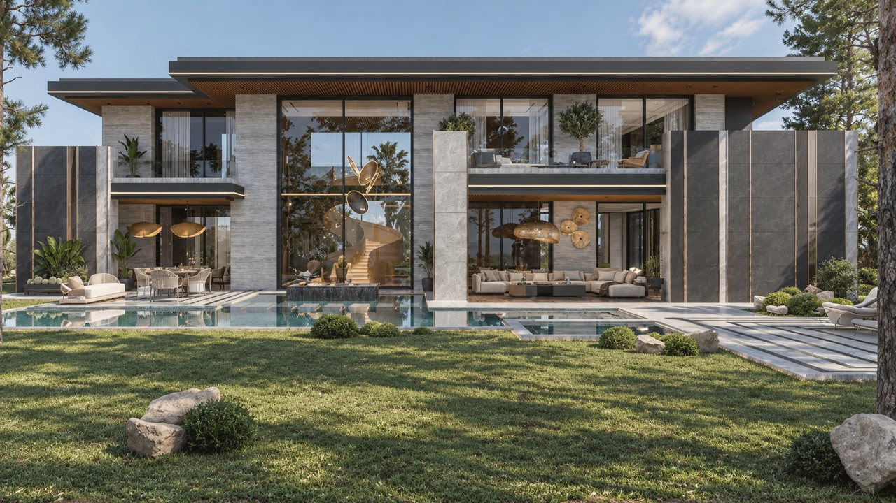
الأوسع بين الثلاث: ستة أجنحة، 370 m² من التراسات المغطاة، مصعد زجاجي، والأطلس في بانوراما.
نفس الكتابة المعمارية، نفس مستوى الخدمات. المقياس وحده يتغيّر.
مشترك بين الفيلات الثلاث: ارتفاع سقف يصل إلى 8 m · مسبح خاص لا متناهٍ · إطلالة على الأطلس، دون أي مقابل.
الاقتناء، التسليم، التخصيص، الإدارة: أجوبة عن الأسئلة التي تُطرح علينا أكثر من غيرها.
طرح سؤالنعم. يمكن للأجانب شراء عقار محفّظ في المغرب بحرية، باستثناء الأراضي الفلاحية. دومين Red Stone محفّظ بالكامل ولكل فيلا رسمها العقاري الخاص. يرافقكم فريقنا مع الموثّق في جميع الإجراءات.
نعم. تُسلَّم كل فيلا جاهزة: مطبخ مجهّز، حمّامات، غرف ملابس، منزل ذكي، تكييف وتدفئة، ألواح شمسية، مسبح وحديقة مُنسَّقة. أما الأجواء الداخلية المعروضة في الكتالوج فتخضع لعرض سعر مخصّص من مصمّمينا.
في حدود الهيكل، نعم: اختيار المواد، توزيع الأجنحة، بار أو سينما منزلية بدل غرفة نوم، تهيئة الحديقة. تُدرس التعديلات مع المهندس المعماري قبل التوقيع.
الدومين مسيّج، محروس على مدار الساعة مع مراقبة الدخول، ويديره كونسيرج يتولّى العناية بالأجزاء المشتركة والحدائق، وعند الطلب، بفيلتكم أثناء غيابكم.
نعم. يمكن للكونسيرج تولّي الإدارة الإيجارية لفيلتكم خلال الفترات التي لا تشغلونها فيها، من استقبال الضيوف إلى العناية بها.
بموعد مسبق، سبعة أيام في الأسبوع، في الدومين أو عبر الفيديو لتقديم أولي. راسلونا أو اتصلوا على +212 6 17 17 47 78.
صالات معيشة مزدوجة الارتفاع، موادّ تزداد جمالًا مع الزمن، غرف مفتوحة على التراسات. من تصميم Line Design.
كتالوج التصاميم الداخلية

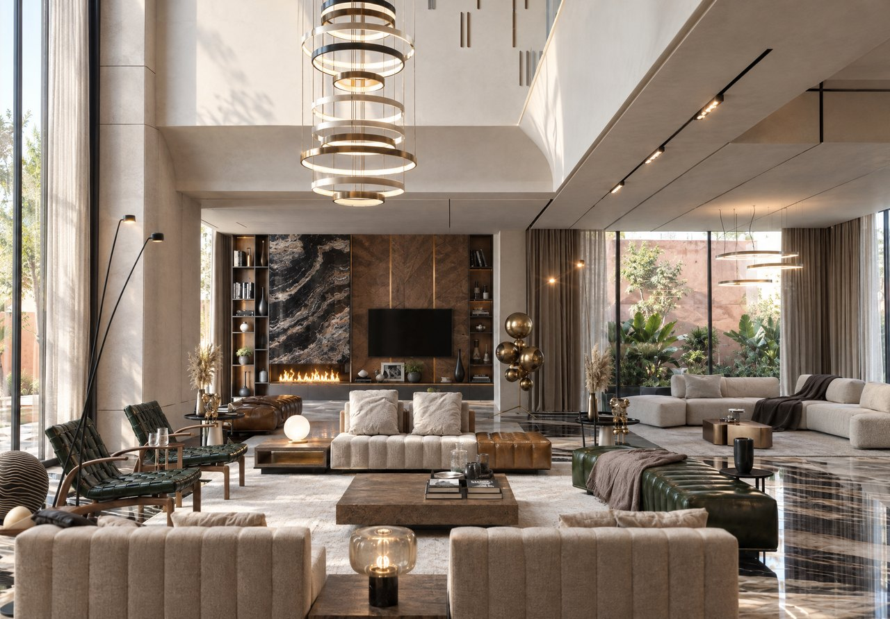
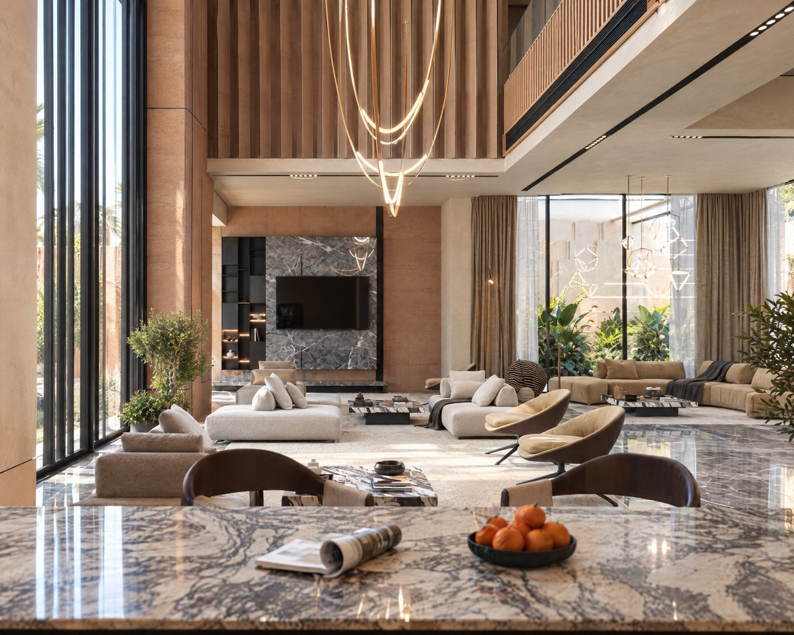
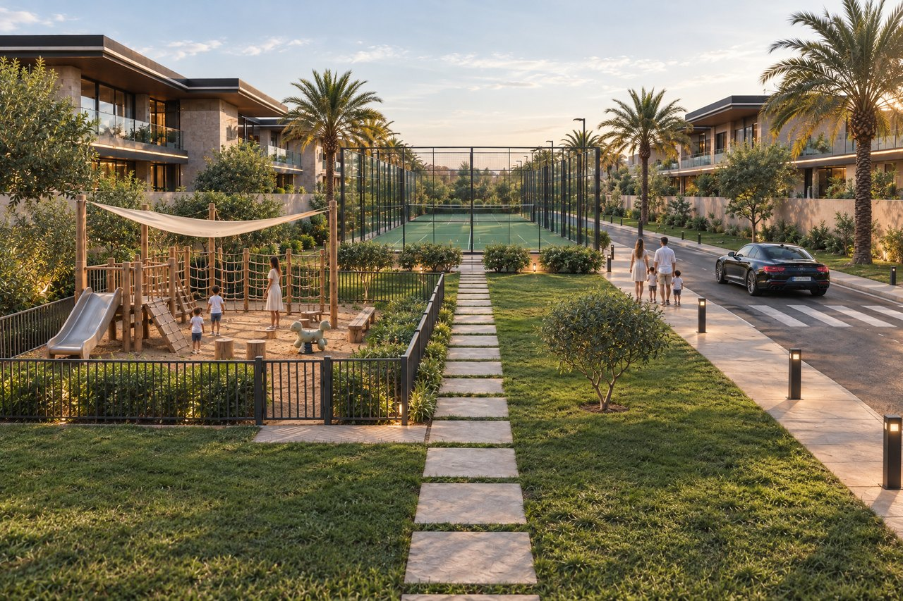
ممرّات الزيتون، الحوض، التراس تحت الشمس. في دومين Red Stone، للحياة اليومية إيقاع المنتجعات.
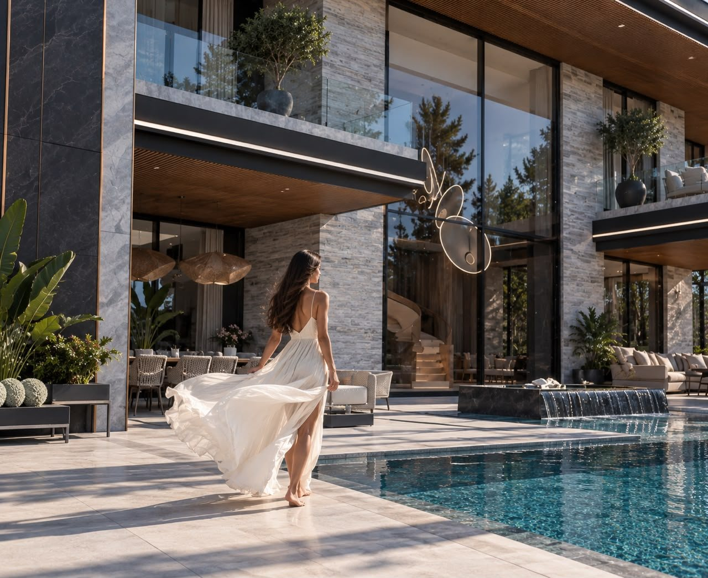
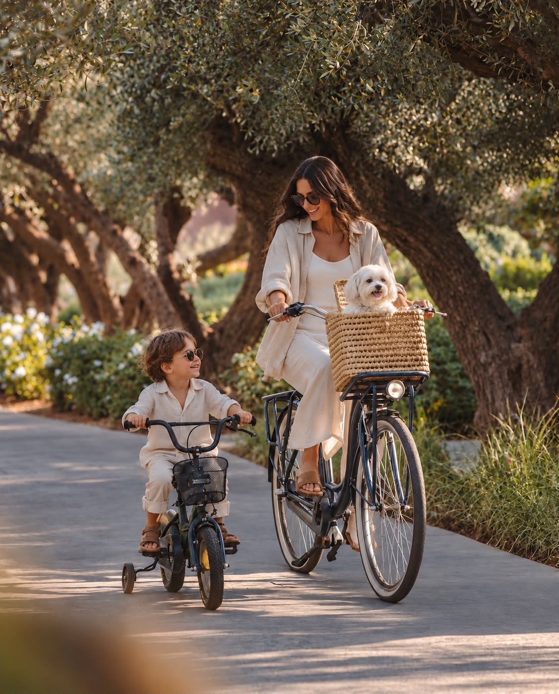
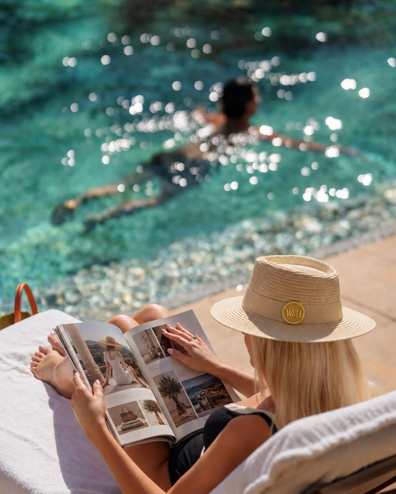
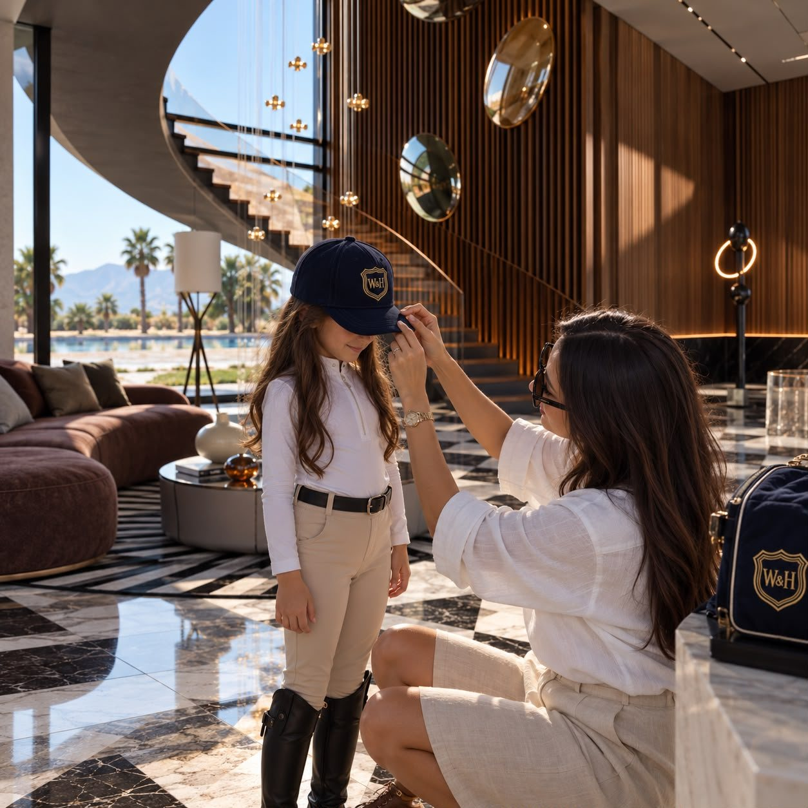
ثمانية هكتارات مسيّجة ومحروسة، كونسيرج، مقهى، صالة رياضية، ملعبا بادل. لا تسلّم Williams & Harper فيلا فحسب: الدومين مصمّم لتكون الحياة اليومية بسيطة.
يفتح مقهى الدومين مع بزوغ النهار: خبز ساخن، صحف، وأول إسبريسو في مواجهة الحدائق. ويلحق به متجر قريب.
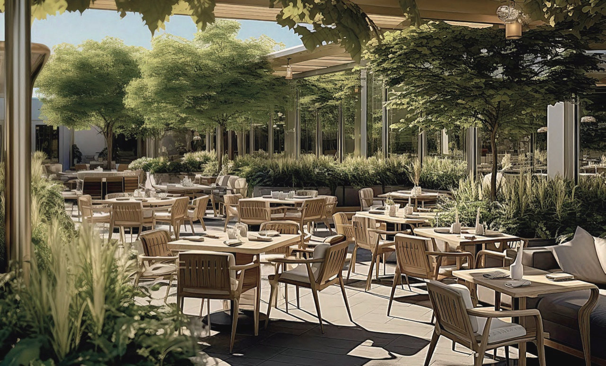
مخصّصة للسكان، مجهّزة بمعدّات حديثة، مفتوحة من الصباح إلى المساء. مدرّب عند الطلب، عبر الكونسيرج.
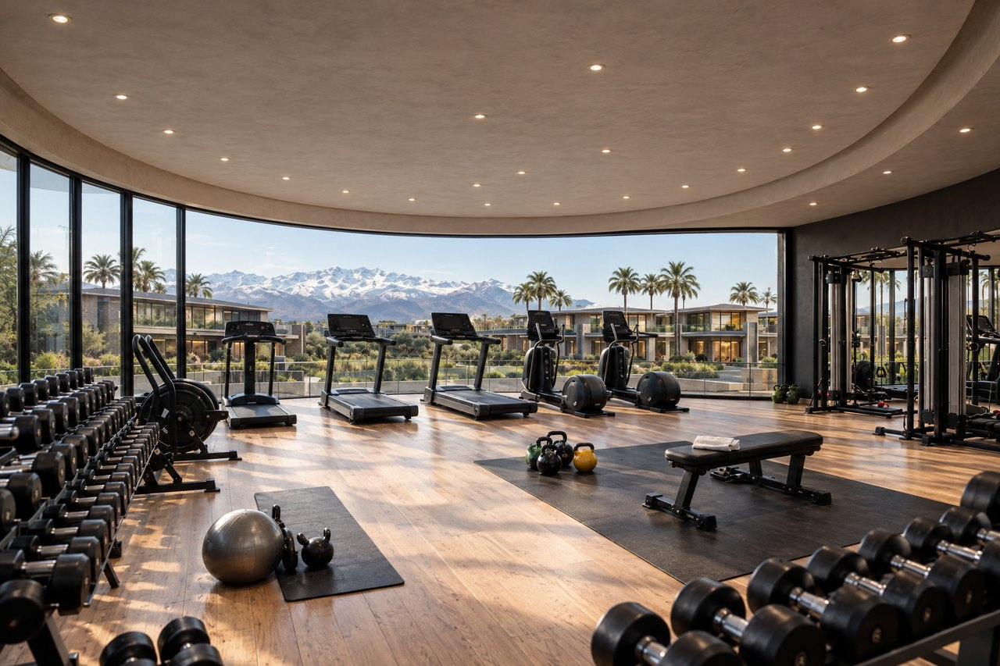
وفق معايير المنافسات، مضاءان في المساء. الحجز عبر الكونسيرج، والمضارب متوفّرة.
متجر صغير، مغسلة، سبا، Red Coffee ومتاجر قريبة مجمّعة تحت قبّة زجاجية، على بُعد خطوات من منزلكم. التوصيل إلى الفيلا بمجرّد اتصال.
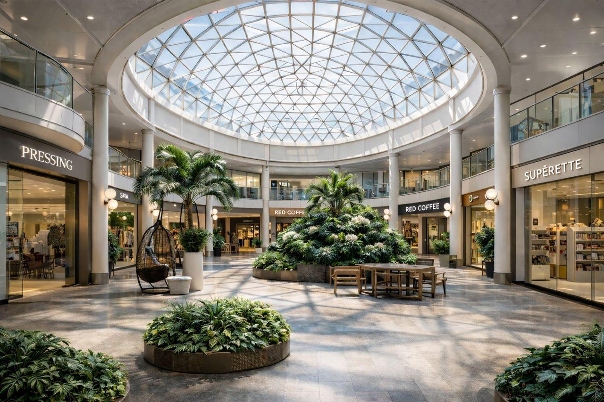
تبدأ ملاعب مراكش عند مخرج الدومين. أقرب ملعب غولف على بُعد خمس دقائق.
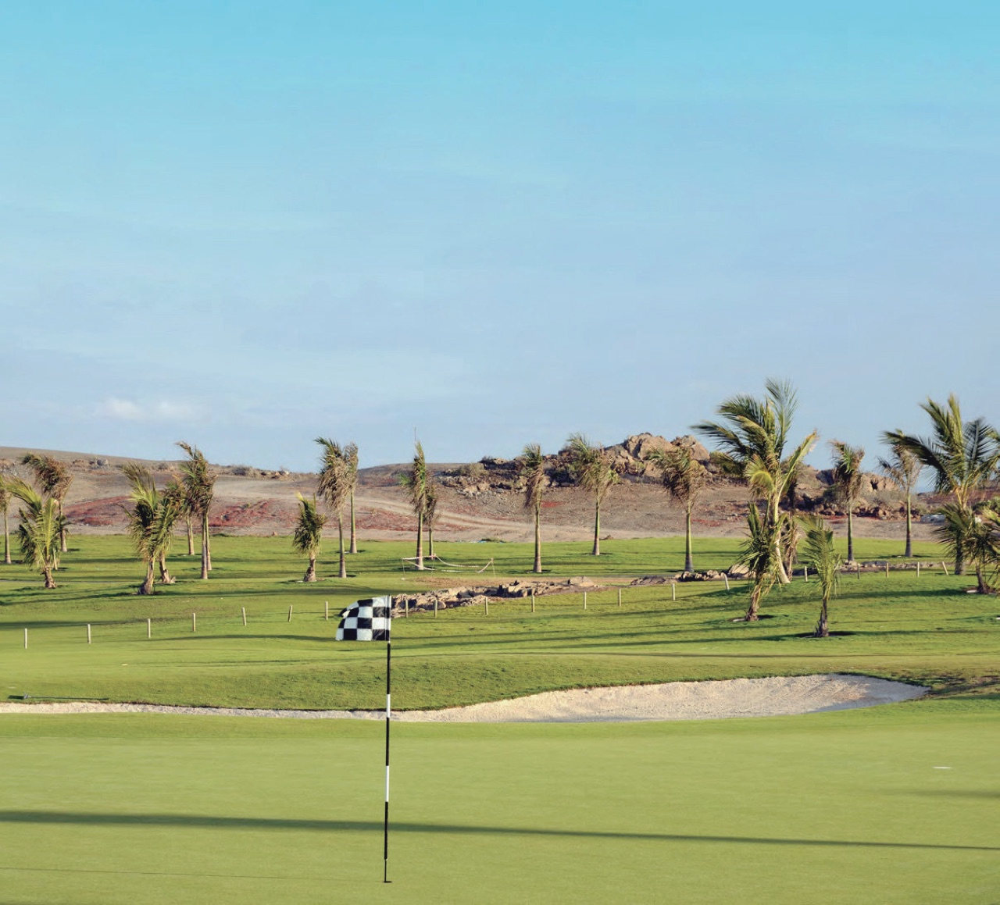
زلّاقة، هياكل خشبية، مظلّة شراعية ومقاعد حجرية، في حديقة مسيّجة عند أقدام ملاعب البادل. الأطفال يلعبون، والآباء يراقبون.
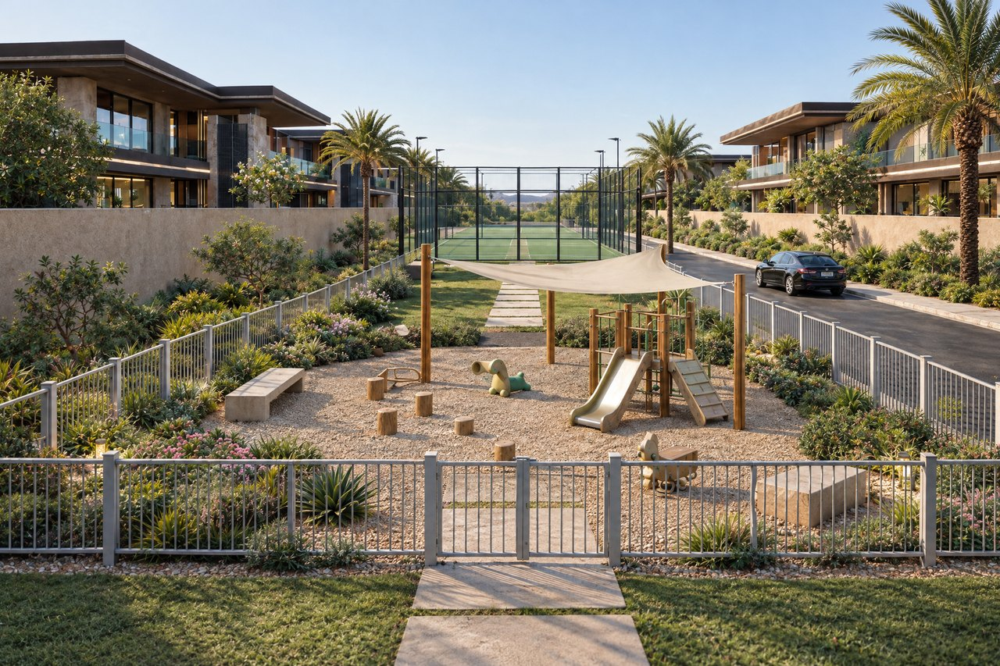
تغيب الشمس خلف الجبال، وتبرز الإضاءة المنسّقة الحجر والخشب. وكل ما تبقّى، يتكفّل به الكونسيرج.

زيارات بموعد مسبق، برفقة مهندس معماري من المشروع. الكتيّبات والمخططات تُسلَّم عند الطلب.